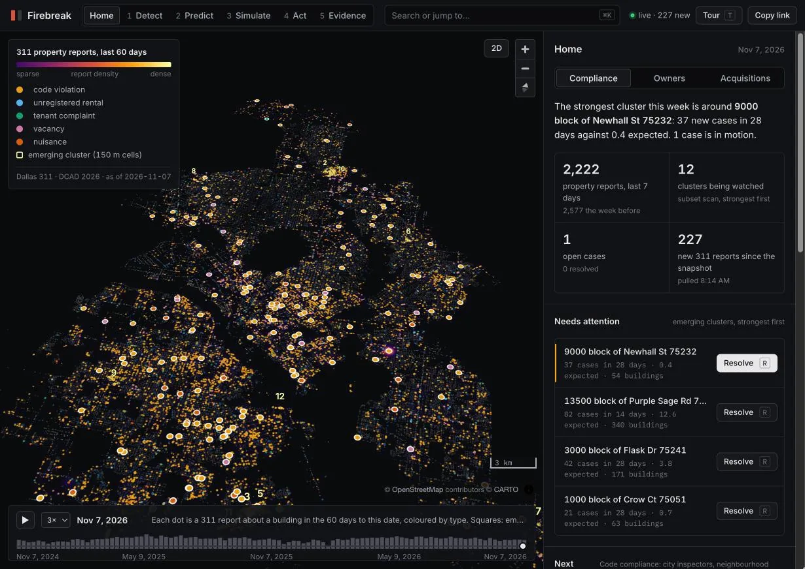
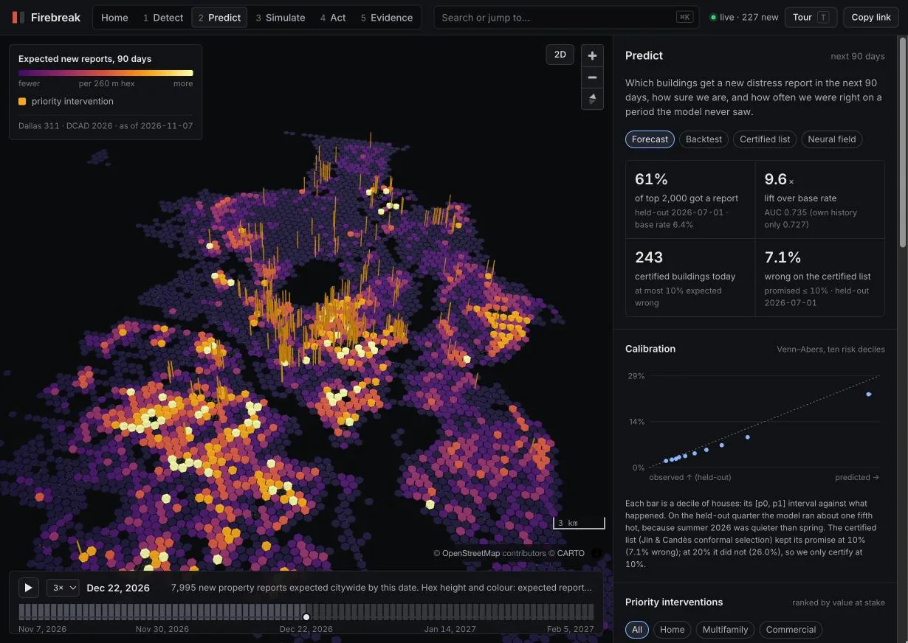
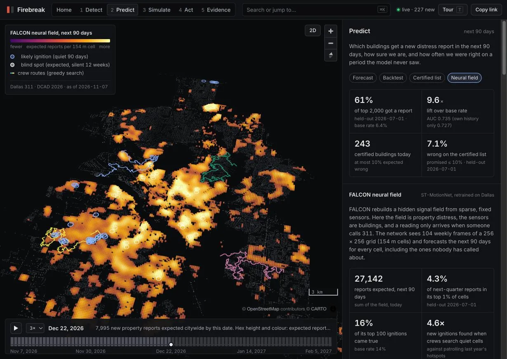
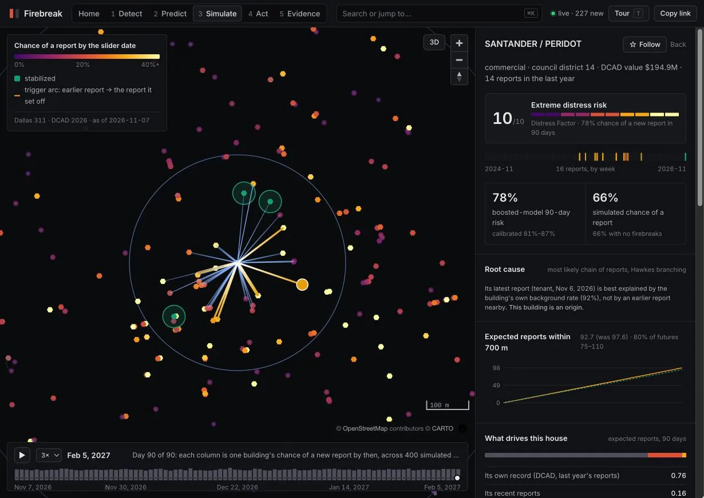
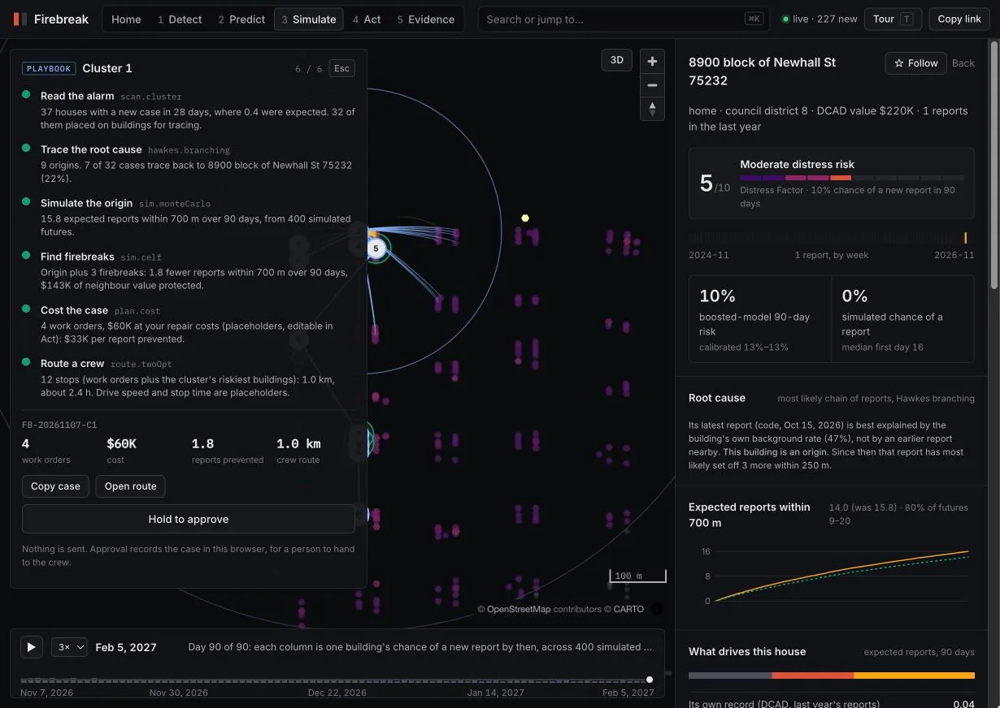
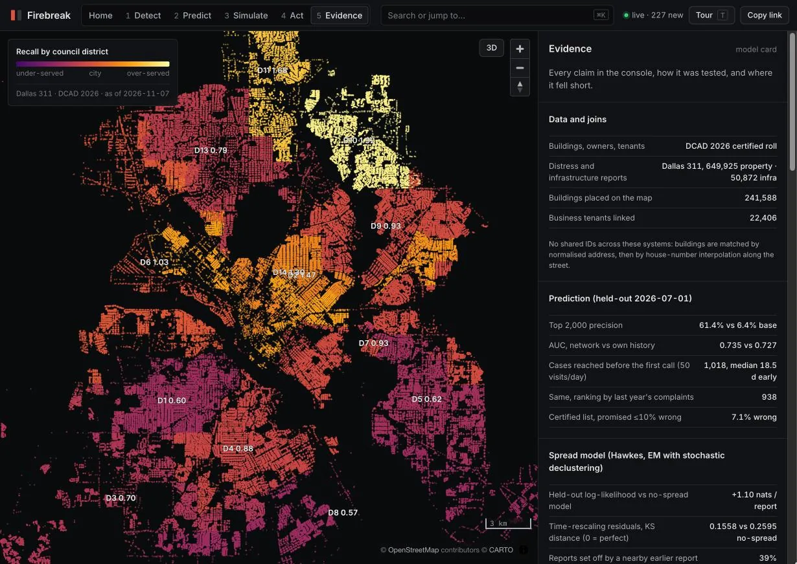

1
Detect what is starting now
Every 311 report on the map, a live pull of today's reports, and a subset-scan alarm for clusters growing faster than their own history.

Built for HackUTD 2026, CBRE track: Predict Before It Spreads
Firebreak forecasts every building in a city for the next 90 days, traces each new problem to the building that set it off, and plans the few repairs that spare the most neighbours. It runs on public records that share no IDs, and it stops at a person's approval.

01 · The problem
A code violation, a vacant house, a landlord who stops answering. Each one is logged somewhere: 311, the appraisal roll, a permit system. None of those systems share an ID, so no one sees the pattern until the block has already tipped.
Dashboards show what already happened. Inspectors still work the queue in the order calls arrive. By the time a cluster is obvious, the cheapest fix, at the building where it started, is months behind.
02 · How it works
Every 311 report on the map, a live pull of today's reports, and a subset-scan alarm for clusters growing faster than their own history.

Gradient-boosted risk for every building, calibrated with Venn-Abers intervals, plus a certified list that promises at most 10% wrong, and a neural field for the blocks nobody calls about.

Click any building. A spatio-temporal Hawkes model plays out its cascade 400 times, then a CELF search finds the three repairs that spare the most reports at other houses.

Press R on a cluster. The playbook traces it to its origin, simulates it, costs the work orders and routes a crew, all with the console's own tools, then waits for a person to hold Approve.

A model card with each test on a quarter the model never saw, a fairness audit by council district, and the experiments that failed.

03 · In use
A code-compliance supervisor in Dallas, start to finish. Every step is a real screen in the console.
The brief names the strongest cluster this week: — new cases in — days where — were expected, across — buildings.
The playbook traces the cluster to the building where it most likely started, runs 400 futures and picks the firebreaks.
The case shows cost, reports prevented and a 2-opt crew route. The supervisor holds Approve. Nothing is sent anywhere.
The route opens in Google Maps for the crew; the case moves to Crew dispatched with a timestamp.
The crew reports back. The case closes with an outcome, and the export goes into the department's own system as CSV.
04 · For teams
City inspectors, neighbourhood services, council offices
— cases a 50-visit-a-day crew reaches before the first call
Portfolio, asset and property managers
— business tenants linked to the buildings they occupy
Investors and wholesale buyers
— leads today, owner-occupied homes never included
05 · Proof
The model was frozen on — and scored on the 90 days that followed. Every number on this page is read from the same files the console loads.
| Claim | Result |
|---|
06 · Platform
The pipeline needs two inputs: a property roll with locations, which every county appraisal district publishes, and a time-stamped event log with coordinates. Dallas 311 comes from Socrata, and many US cities publish the same kind of log through the Open311 GeoReport v2 standard. Swap the two loaders and every screen, test and audit reruns.
The output is a set of static files with a written contract, so it serves from any CDN with no database, and the console renders — buildings in the browser.
| Endpoint | What it holds |
|---|---|
/data/meta.json | Counts, the held-out test, edge ratios, assumptions with sources |
/data/buildings.bin | Columnar building table: location, class, risk, Distress Factor inputs |
/data/events.bin | Every 311 report, sorted by day, placed on a building |
/data/hawkes.json | Spread model: parameters, branching, spread rate by month |
/data/alarms.json | Cluster alarms and their backtest |
/data/falcon.json | Neural field, training log and head-to-head backtest |
$ curl -s https://<host>/data/meta.json | jq '.model.network'
{ "auc": —, "watch_list": 2000,
"watch_precision": —, "base_rate": — }07 · See it run
Film mode plays the guided tour full screen, between a title card and an end card. Every shot is the live console. Press F in the console, start a screen recording, and stop when the end card fades.
Browsers only allow full screen after a click, so a direct link plays in the window. Press F inside the console for full screen.
08 · Pricing
Cities and portfolios pay per building watched; buyers pay per seat. Illustrative pilot pricing for discussion, not a quote.
$0.10 per building a year
Dallas, — a year: about the cost of — inspections at the console's placeholder rate.
$2 per building a month
Your buildings and everything within 700 m of them, scored and simulated.
$149 per seat a month
Lead lists refreshed with every build, scored by expected fee per contact.
09 · Questions
No. There is no email, SMS, mail or call integration. Every plan ends at a person's approval, and cases are exported, not sent.
No. Owners are hashed before anything reaches the browser, homes are shown at the 100-block level, and owner-occupied homes are never on a lead list.
It is an agent in the plain sense: a fixed plan of the console's own tool calls, each reading the last one's result. It is not a language model, so every number in its log is computed, and it stops for a human.
Never by property value. The budget plan ranks by reports prevented per dollar; ranking by value sent the whole budget to the wealthiest district, so we dropped it.
311 measures what people report, not what exists. Our neural network lost to the boosted model, and the case-closure study found no causal effect. The Evidence screen shows all three.
The Home screen's data-health table shows the age of every source. The live feed polls Dallas Open Data from the browser and re-scores buildings near each new report.